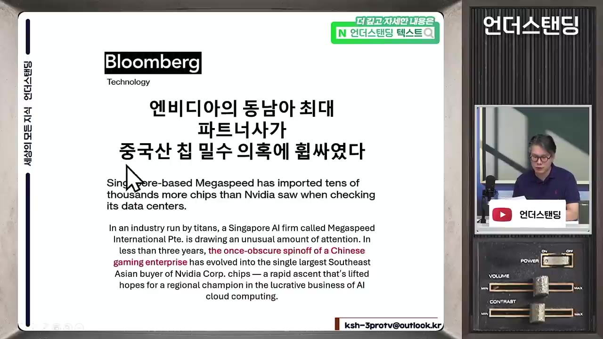
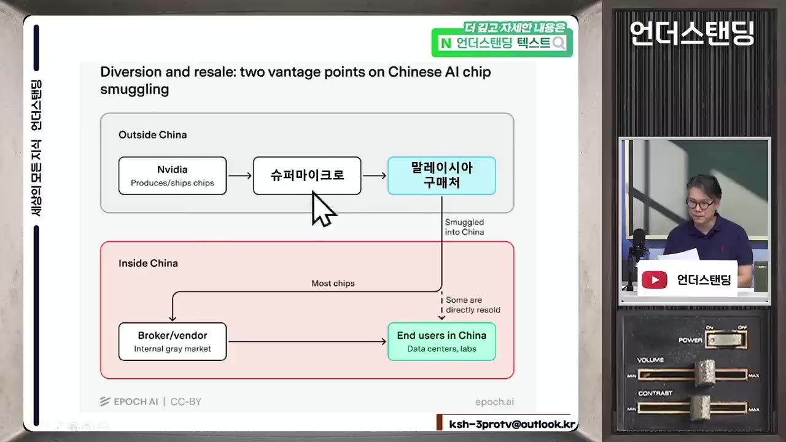

[하이라이트] 사라진 엔비디아 칩. 앨리스 황의 '메가스피드' 미스터리와 가짜 서버 밀수 수법 |언더스탠딩 김상훈 기자 |2026년 8월16일 영상 편집버전
▶ 원본 영상 보기⚠️ 자막이 8:04에서 끊겨 있어(8:04~9:00 구간 없음) 마지막 대목은 영상 설명란 요약을 참고해 정리했습니다. 해당 부분에는 "(설명란 기준)"이라고 표시했습니다.
한눈에 보기
- 싱가포르의 엔비디아 동남아 최대 파트너사 메가스피드가 "산 칩보다 실제 운용 칩이 적다"는 이유로 중국 밀수 의혹을 받고 있다. 미국 정부 조사 결과는 아직 나오지 않았다.
- 수출 통제를 어기면 거래 금액의 최대 2배 벌금을 물고, 달러 결제망에서도 차단될 수 있어 사실상 영업정지와 같다.
- 중국 기업이 지분 일부만 가진 해외 관계사를 통해 주문하는 방식은 통제망의 사각지대가 된다.
- 슈퍼마이크로컴퓨터 관계자 3명은 2년간 25억 달러어치 GPU 서버를 중국 통제 대상 기업에 보낸 혐의로 기소됐다.
- 수법은 동남아 업체를 통한 주문, 대만 경유, 일련번호 스티커 떼기로 이어지는 고전적인 방식이다.
이런 분께 도움이 됩니다
- 엔비디아·슈퍼마이크로 같은 AI 반도체 관련주의 규제 리스크를 이해하고 싶은 투자자
- 미국 수출 통제가 어떻게 작동하고 어디가 뚫리는지 궁금한 분
핵심 내용
메가스피드 의혹
- 블룸버그가 1월에 "엔비디아의 동남아 최대 파트너사 메가스피드가 중국산 칩 밀수 의혹에 휩싸였다"고 보도했다. (0:46)
- 이 회사는 과거 중국 게임 업체의 알려지지 않은 해외 자회사였다고 한다. 엔비디아는 "지금은 아니다"라는 입장이다.
- 핵심 의혹은 수량 불일치다. 엔비디아에서 산 칩보다 데이터센터에서 돌리는 칩이 적다.
- 예: 100개를 샀는데 운용 중인 것은 80개이고, 빈 20개가 중국으로 흘러갔다는 추정이다.
- 실제로 어디로 갔는지는 알 수 없고, 미국 정부가 조사 중이라 결과는 불확실하다.
- 엔비디아는 중국 기업 지분이 없고 판매한 GPU가 중국으로 전용됐다는 증거도 없다고 주장한다. (4:06)

수출 통제 위반의 처벌
- 의혹이 사실이면 판 쪽인 엔비디아도 처벌받을 수 있다. 중국과 연관된 회사에 팔았다는 것만으로 통제망에 걸린다. 엔비디아는 "몰랐다"고 주장할 것이다.
- 위반 시 거래 금액의 2배에 달하는 벌금을 낼 수 있다.
- 미국은 통제 시스템이 두 개라서 더 무섭다.
| 기관 | 추적 대상 |
|---|---|
| 상무부 산업안보국(BIS) | 물건 |
| 재무부 해외자산통제국(OFAC) | 사람 (총수·대표이사 포함) |
- 한 건의 위반으로도 두 기관에서 동시에 민사 제재금을 맞을 수 있다. (3:10)
- 진짜 위협은 벌금보다 결제 차단이다.
- 미국이 스위프트(SWIFT) 결제망을 가지고 있어 거래 대금을 받을 수 없게 된다.
- 벌금을 안 내거나 악질적이면 본인도 통제 대상 리스트에 오르고, 전 세계 기업이 거래를 끊는다.
- 발언자가 든 사례: 프랑스의 한 판사가 제재 대상에 오르자 지메일·신용카드·은행 거래가 모두 막혔다.
💡 통제 대상 리스트에 오르면 사실상 영업정지다.
통제망의 허점: 지분 일부만 가진 관계사
- 통제 대상 중국 모기업의 해외 자회사가 아니라 지분 관계만 있는 관계 기업은 보통 통제 목록에 올리지 않는다.
- 예: 통제 대상 중국 기업이 해외 회사 지분 10%를 갖고 있어도 종속 회사가 아니면 목록에서 빠진다. 발언자는 다임러 벤츠를 중국 기업이라 하지 않는 것과 같은 논리라고 설명했다.
- 중국 회사들은 이런 해외 관계사를 통해 주문하고 물건을 뒤로 받는다. 특이한 케이스가 아니라 매우 많다고 한다. (5:27, 6:12)
- 엔비디아의 "중국 지분 없음" 주장이 맞더라도 이런 구조일 가능성은 남는다는 취지다.
슈퍼마이크로컴퓨터 기소 사건
- 지난 3월 뉴욕 맨해튼 연방검찰이 수출 통제 위반·밀수 등의 혐의로 3명을 기소했다. 회사 자체가 기소된 것은 아니다. (6:26)
- 대상: 슈퍼마이크로 공동 창업자, 대만 법인 총괄 매니저, 브로커(대만 국적 2명, 미국 국적 1명).
- 혐의: 약 2년간 엔비디아 GPU 탑재 서버 25억 달러어치를 중국의 수출 통제 대상 기업에 보냈다.
- 밀수 수법은 다음 순서로 진행됐다.
🔁 가짜 서버 밀수 수법
- 주문 사주
- 칩 구매·조립
- 대만 경유
- 스티커 제거
- 바꿔치기

- 가짜 서버는 미국 당국의 현장 점검에 대비한 위장용이라고 한다. (설명란 기준)
💡 장부와 일련번호가 맞아도 실물은 다를 수 있어서, 서류 검증만으로는 통제가 어렵다.
기억할 숫자·인용
- 거래 금액의 2배: 수출 통제 위반 시 벌금 상한
- 25억 달러: 슈퍼마이크로 관련 혐의 서버 규모, 약 2년에 걸쳐, 기소 인원 3명
- 메가스피드 예시: 산 칩 100 → 운용 80 → 20 행방불명 (발언자의 설명용 가정 수치)
- "제재 대상에 오르는 순간 모든 달러 기반 결제망과 미국 기업들이 거래를 다 끊어버려."
생각해볼 점
- 메가스피드 건은 보도와 의혹 단계이며 조사 결과가 없다. 엔비디아는 증거가 없다는 입장이라 영상의 어느 주장도 확정 사실이 아니다.
- "운용 칩이 적다"는 것만으로는 유출을 증명할 수 없다. 고장, 재고, 다른 시설 이전 같은 다른 설명도 가능한지는 영상에서 다루지 않았다.
- 슈퍼마이크로 사건은 기소 단계이므로 유죄가 확정된 것이 아니다.
- 지분 10% 관계사를 통제 대상에서 빼는 기준이 앞으로 강화될지는 영상에 나오지 않았다.
바로 해볼 일
- 엔비디아·슈퍼마이크로 관련 미국 상무부(BIS) 조사·기소 진행 소식을 공식 발표 기준으로 확인하기
- 보유·관심 종목의 매출 중 중국·동남아 비중과 유통 파트너 구조 점검하기
- 블룸버그 원 보도와 영상 원본(링크: https://youtu.be/yjED9OQUIQc)에서 8:04 이후 구간 직접 확인하기